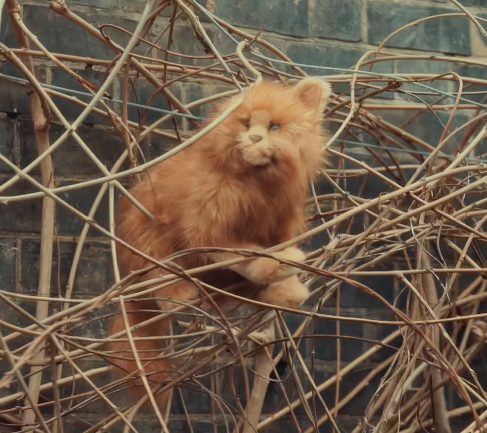
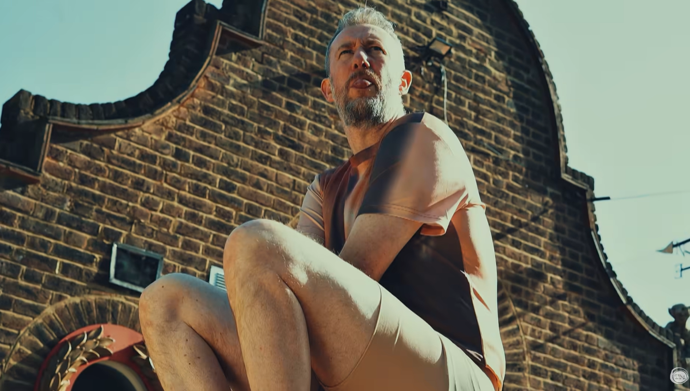
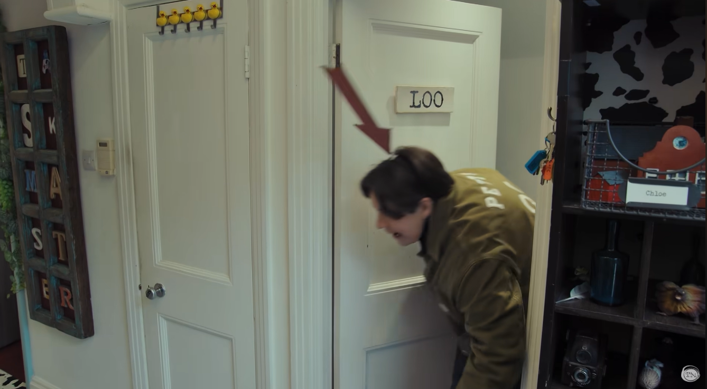
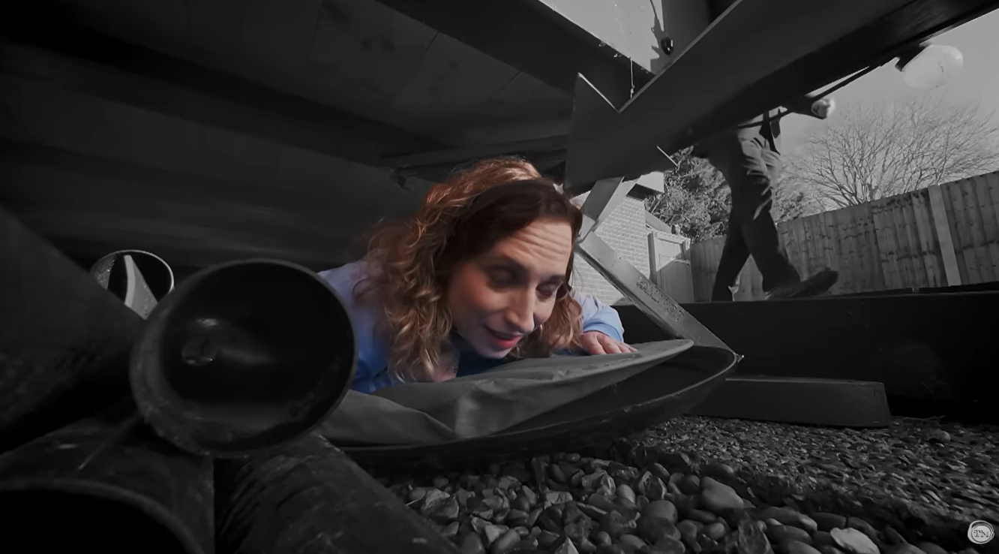
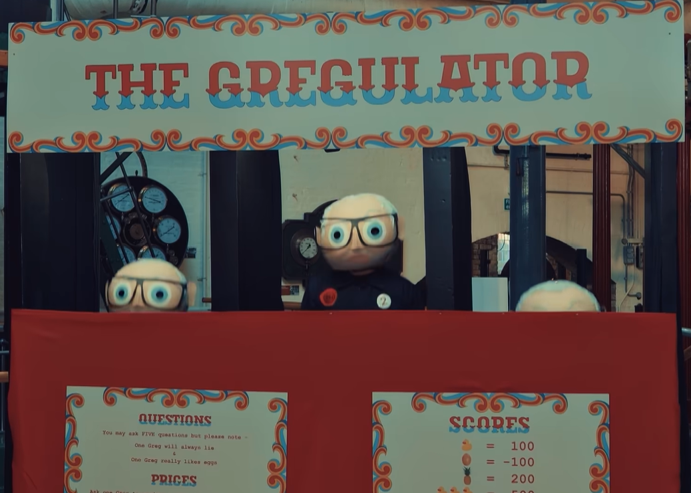
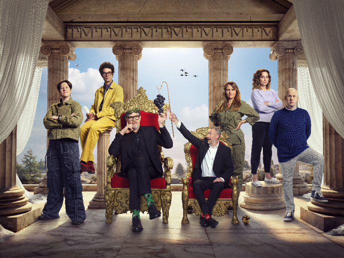

Series 22: Save the Date For Real
Your Task
New information has been announced and your speculations from your previous post are no longer relevant.
Provide these updates and a new commentary on Series 22!
Save the Date!
UK Taskmaster Series 22 is set to premiere on Thursday 3rd September at 9pm on Channel 4 UK, and around the world soon after on YouTube!
Evidently the biggest correction is that I predicted that Taskmaster Series 22 to start in the second half of September. We now have concrete information that Taskamster Series 22 will start on 3rd September which is very much in first half of September, and also very much near the beginning of the month.
Despite my prediction error, I feel that my prediction method was justified. As indicated from the Taskmaster wikipedia page under the Episodes section, the majority of the autumn series have debuted in the latter half of September (particularly those after Series 10 and the move to Channel 4).
Figure 1: The Source of My Forecast Inaccuracy…
Other New Revelations!
A closer deep dive of the new trailer indicates that:
- This will be a steamy series as indicated in the video description.
- This is of course in reference to the special location for this series being the London Museum of Water and Steam
- The cat is out of the bag now; Patatas is estimated to be 3000 years old, and to be of the same ilk as famous Greek philosophers such as Plato and Socrates.
- Richard Ayoade magically conjures up Little Alex Hermes at around 0:28 in a pose that is not too dissimilar to Auguste Rodin’s The Thinker.
Figure 2: Our Hairy Trio of Great Greek Philosopher; Plato (left), Patatas (center) and Socrates (right).



Figure 3: The Great Thinker and The Great Tinker.


- Matt Lucas is stumped for ideas and words at around 0:31, exclaiming only a “Gosh!” and performing a rather weak hand clap.
- Chloe Petts needs to ensure that she is clear of the sausage machine at around 0:35.
- The “Step on every correct step” and Chloe’s crawling makes me think that she may be applying a loop hole of not stepping in general.
- At around 0:41, Nina Conti states that she does not like overthinking things.
- She also makes this statement in a posh but shaky voice, adding to her general eccentric character.
- Isy Suttie poses the important question of whether the pig flies at 0:42.
- Is this the new “We were the monsters weren’t we?” or “Am I the spider?”?
- Richard Ayoade makes a bold statement that he doesn’t straightforwardly know anything (around 0:37).
- I believe he does know some things straightforwardly, but not necessarily all things.
- At around 0:46, we see Chloe Petts donning head wear with a massive red arrow on top whilst stealthily creeping out of the loo.
- Is this the same task as in the the prior trailer scene in which Isy Suttie was evading Little Alex Hermes under the hutch with the same red arrow?
Figure 4: Chloe and Isy trying to evade Little Alex Horne’s deadly horns.


The Gregulator
Figure 5: Regulating the Greg Eggs.

The trailer also provides a clearer indication of what The Gregulator entails.
Under the Questions heading, we see that:
You may ask FIVE questions but please note -
One Greg will always lie
&
One Greg really likes eggs
The Scores section details how contestants are potentially going to be rewarding from this their questions. Ducks are worth a positive number of points (100 for a single duck, 500? for three ducks in a row), and eggs have negative points associated with them (-100). Pineapples may be highly desirable as they are worth 200 points a piece.
The Gregulator potentially involves uncovering the truth from three Greg heads, but only one Greg is telling the truth.
Contestants should aim to obtain ducks and pineapples, but avoid eggs.
What Have We Learnt Today?
We’ve learnt that:
- Taskmaster Series 22 is set to premiere on Thursday 3rd September 2026, first on Channel 4 in the UK at 9pm, and soon after on youtube for the rest of the world.
- Of course, this gif made from the end of the trailer could confusion for American viewers. The new series starts on the aforementioned date, but the new season starts on 9th March 2026, in which case you have already missed it. No spoilers please!
- Patatas is around 3000 years old and is one of our great philosophers.
- We’ve been given further insight into the potential tasks involved for this series, and the characters of each of the cast members.
Figure 7: The Final Look at Heruclean Gang of Taskmaster Series 22.
